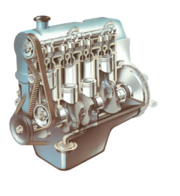
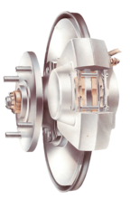
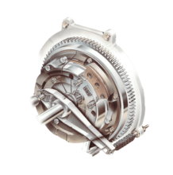
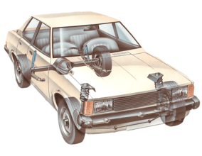
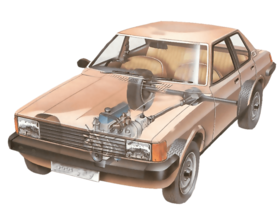

The simplest and most common type of engine comprises four vertical cylinders close together in a row. This is known as an in-line engine. Cars with capacities exceeding 2,000cc often have six cylinders in line.
The engine is the heart of your car. It is a complex machine built to convert heat from burning gas into the force that turns the road wheels.
The chain of reactions which achieve that objective is set in motion by a spark, which ignites a mixture of petrol vapour and compressed air inside a momentarily sealed cylinder and causes it to burn rapidly. That is why the machine is called an internal combustion engine. As the mixture burns it expands, providing power to drive the car.
To withstand its heavy workload, the engine must be a robust structure. It consists of two basic parts: the lower, heavier section is the cylinder block, a casing for the engine's main moving parts; the detachable upper cover is the cylinder head.
The cylinder head contains valve-controlled passages through which the air and fuel mixture enters the cylinders, and others through which the gases produced by their combustion are expelled.
The block houses the crankshaft, which converts the reciprocating motion of the pistons into rotary motion at the crankshaft. Often the block also houses the camshaft, which operates mechanisms that open and close the valves in the cylinder head. Sometimes the camshaft is in the head or mounted above it.

Modern cars have brakes on all four wheels, operated by a hydraulic system. The brakes may be disc type or drum type.
The front brakes play a greater part in stopping the car than the rear ones, because braking throws the car weight forward on to the front wheels.
Many cars therefore have disc brakes, which are generally more efficient, at the front and drum brakes at the rear.
All-disc braking systems are used on some expensive or high-performance cars, and all-drum systems on some older or smaller cars.

The first stage in the transmission of a car with a manual gearbox is the clutch.
It transmits engine power to the gearbox, and allows transmission to be interrupted while a gear is selected to move off from a stationary position, or when gears are changed while the car is moving.
Most cars use a friction clutch operated either by fluid (hydraulic) or, more commonly, by a cable.
When a car is moving under power, the clutch is engaged. A pressure plate bolted to the flywheel exerts constant force, by means of a diaphragm spring, on the driven plate.
Earlier cars have a series of coil springs at the back of the pressure plate, instead of a diaphragm spring.
The driven (or friction) plate runs on a splined input shaft, through which the power is transmitted to the gearbox. The plate has friction linings, similar to brake linings, on both its faces. This allows the drive to be taken up smoothly when the clutch is engaged.
When the clutch is disengaged (pedal depressed), an arm pushes a release bearing against the centre of the diaphragm spring which releases the clamping pressure.
The outer part of the pressure plate, which has a large friction surface, then no longer clamps the driven plate to the flywheel, so the transmission of power is interrupted and gears can be changed.
When the clutch pedal is released, the thrust bearing is withdrawn and the diaphragm-spring load once again clamps the driven plate to the flywheel to resume the transmission of power.
Some cars have a hydraulically operated clutch. Pressure on the clutch pedal inside the car activates a piston in a master cylinder, which transmits the pressure through a fluid-filled pipe to a slave cylinder mounted on the clutch housing.
The slave-cylinder piston is connected to the clutch release arm.

There are various ways of attaching the wheels of the car so that they can move up and down on their springs and dampers, and do so with as little change as possible in the distance between adjacent wheels or in the near-vertical angle of the tyres to the road.
The front wheels must be free to pivot on their steering swivels. The driven wheels, whether front or rear, must also be free to rotate with the drive shafts.

In a front-engined rear-wheel-drive car, power is transmitted from the engine through the clutch and the gearbox to the rear axle by means of a tubular propeller shaft.
The rear axle must be able to move up and down on the suspension according to variations of the road surface.
Front-wheel-drive cars use the same transmission principles as rear-wheel-drive cars, but the mechanical components vary in design according to the engine and gearbox layout.
Some cars, such as VW Beetles and smaller Fiats, have rear-mounted engines and gearboxes, driving the rear wheels.